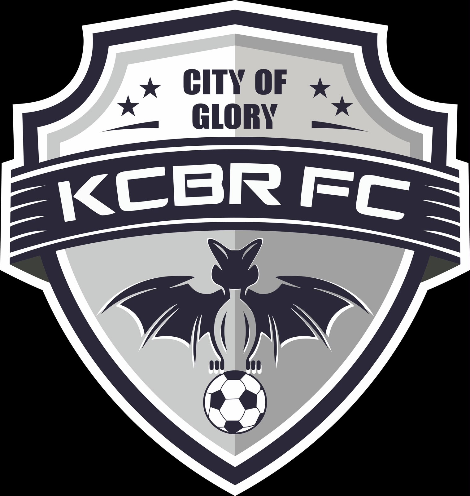

Persaudaraan
Menjaga kebersamaan di dalam dan di luar lapangan.

KECEBUR FCDUSUN KECEBUR · KARANGTENGAHDUSUN KECEBUR · DESA KARANGTENGAH
Bukan sekadar sebelas pemain. Kami adalah keluarga yang tumbuh bersama, berjuang bersama, dan membawa kebanggaan Kecebur ke setiap lapangan.
Kecebur FC adalah tim sepak bola yang berasal dari Dusun Kecebur, Desa Karangtengah.
Didirikan pada 22 Juni 2018, Kecebur FC menjadi wadah untuk menyalurkan minat dan bakat sepak bola, mempererat persaudaraan, serta membangun semangat kebersamaan di lingkungan desa.
Bagi kami, sepak bola bukan hanya tentang skor akhir. Ini tentang kerja sama, sportivitas, perjuangan, dan kebanggaan membawa nama Kecebur di setiap pertandingan.
Menjaga kebersamaan di dalam dan di luar lapangan.
Bermain dengan jujur, menghormati lawan, dan menjunjung fair play.
Terus berlatih, berkembang, dan memberikan yang terbaik.
Para pemain yang membawa semangat Kecebur ke lapangan.
Data pemain belum dimasukkan. Bagian ini nanti bisa menampilkan foto, nama, posisi, dan nomor punggung setiap pemain.
Kirim data pemain ↗Informasi pertandingan Kecebur FC dalam satu tempat.
Catatan: data pertandingan di bawah ini adalah contoh tampilan, bukan jadwal atau hasil resmi. Ganti datanya melalui file script.js setelah informasi pertandingan tersedia.
Setiap pertandingan menyimpan cerita dan kenangan.
Tambahkan foto skuad Kecebur FC.
Abadikan perjuangan tim di lapangan.
Untuk menambah foto, simpan gambar di folder assets, lalu ganti kartu galeri di index.html.
Ikuti perjalanan tim, bagikan semangatnya, dan hubungi pengurus untuk informasi pertandingan atau kerja sama.
Desa Karangtengah
TANGGAL BERDIRIInstagram Kecebur FC
Kunjungi Instagram ↗Tautan Instagram dapat diatur di script.js setelah username resmi tersedia.